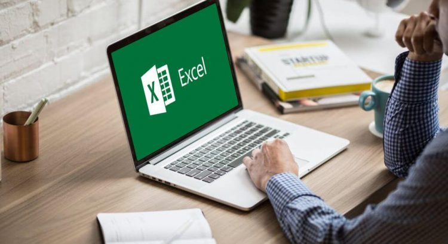

Questões sobre Informática
A Informática é a ciência que dos computadores e dispositivos que processam dados e tratam informações. Estes dispositivos são as ferramentas físicas utilizadas pelas pessoas ao operarem sistemas de informação. Continue lendo para conhecer os momentos que marcaram a história da informática. O Dia da Informática é comemorado em 15 de agosto, data em que foi apresentado o primeiro equipamento nomeado de computador em 1946 nos EUA. A evolução tecnológica iniciada com esses primeiros equipamentos permitiu um salto nas formas como os seres humanos interagem entre si, no trabalho e na sua relação com o mundo. Hoje, a informática e seus equipamentos fazem parte da vida da maioria das pessoas, como ferramentas de trabalho e como facilitadores de atividades diárias. Do primeiro equipamento lançado até hoje, a evolução tecnológica foi enorme.
Preguntas sobre história da informática
Uma equipe da IBM liderada por John Backus desenvolve o FORTRAN em 1957, uma linguagem de computação científica de alto nível que usa declarações em inglês. O dispositivo mouse foi criado pelo engenheiro Douglas Engelbart no início da década de 1960 em seu laboratório de pesquisas no Stanford Research Institute.
O primeiro modelo do microcomputador Apple foi projetado e manufaturado pelo engenheiro eletrônico Steve Wozniak em 1976. Seu amigo Steve Jobs ofereceu a sugestão de vende-lo. Em abril de 1975 Bill Gates e Paul Allen criaram a Microsoft, com o objetivo de desenvolver e comercializar interpretes de BASIC para o Altair 8800.
Responda ao Exercício abaixo:
Exercicio HistóriaMicrosoft Word
O Microsoft Word é um programa de processamento de texto, projetado para ajudá-lo a criar documentos de qualidade profissional. Com as melhores ferramentas de formatação de documento, o Word ajuda a organizar e escrever os documentos com mais eficiência.
Microsoft Excel
O Excel é um programa da empresa Microsoft, incluído no Pacote Office. Com este programa é possível formatar e desenvolver planilhas, com custos de implementação de projetos, demonstração de despesas, análise de gráficos, entre muitas outras funções disponíveis. A função principal do Excel é a de criar fórmulas e inserir cálculos, além de ser possível organizar os dados e configurar diversos tipos de gráficos.

Empresa IBM E SUAS TECNOLOGIAS
Oficialmente, a história da IBM começa em 1911 com o empresário Charles Flint. Foi ele quem uniu três empresas em uma só, criando a CTR – Computing Tabulating Recording Company.
As coisas começam a melhorar e a década de 50 é cheia de inovações. A primeira delas é o IBM 701, primeiro computador científico comercial da empresa. Ele usava como mecanismo de memória os chamados tubos de Williams, uma forma jurássica de armazenamento de memória.
Na década de 60, a IBM passa de uma empresa média com vários produtos bons pra uma gigante com uma ótima plataforma. É que em 64 nasce o System/360, o primeiro computador que realmente muda a indústria e que tem vários sucessores ao longo dos anos.

Microsoft e Apple
Bill Gates e Paul Allen se conheceram ainda no colégio e compartilhavam um interesse em comum: computadores. Em 1975, os dois amigos fundaram uma pequena empresa chamada Microsoft (originada a partir das palavras inglesas microcomputer e software) que pretendia, a princípio, desenvolver um software em linguagem BASIC para o computador Altair 8800 da IBM.
Em 1979, a IBM procura um sistema operacional para seu novo computador e contrata a Microsoft para o serviço. Porém, os jovens Gates e Allen se encontraram em uma situação arriscada porque não possuíam um sistema completo. A solução foi comprar o Q-DOS da Seattle Computer Products por 50 mil dólares, melhorá-lo e transformá-lo em MS-DOS (sistema operacional em disco da Microsoft).
Apesar do contrato com uma companhia de porte como a IBM, a interface de comando de texto do MS-DOS — similar com aquela utilizada pelo Unix — não conseguiu ofuscar a atenção recebida pelo Apple Lisa de, ele mesmo, Steve Jobs. O dono da Apple havia pegado a interface gráfica e a ideia de usar um mouse de outra empresa, Xerox, e adicionou-a ao seu produto. O próximo passo foi a criação do Macintosh. Então, Bill Gates encontra nessa situação uma oportunidade para convencer Jobs a participar do projeto do novo computador da Apple. Gates não só formou a parceria como conseguiu copiar a interface gráfica do Macintosh e vender uma versão parecida no Japão. Ao descobrir isso, Jobs quebrou a aliança entre as duas empresas.

Por isso, separamos para você as 10 maiores inovações tecnológicas de todos os tempos e as que ainda prometem nos surpreender no futuro.